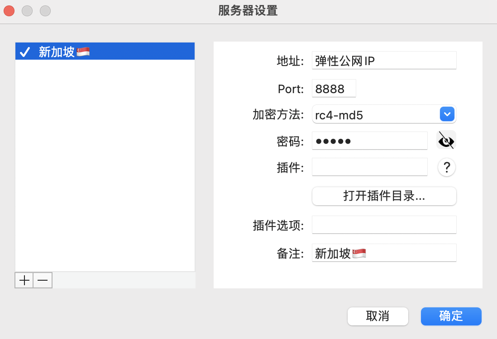

使用阿里云 ECS 和 Shadowsocks 搭建 ladder
1. 购买阿里云 ECS 服务器
阿里云官网：https://www.aliyun.com/
选择 产品 > 热门产品 > 云服务器 ECS > 立即购买 ：
基础配置
- 地域：新加坡（比较稳定）
- 实例规格：最低配置
- 镜像：CentOS 7.4，64位
- 存储：20GB


网络和安全组
- 带宽计费模式：按使用流量
- 带宽峰值：100M
- 其他选项默认

系统配置
- 登陆凭证：设置服务器登陆密码

确认订单
- 费用：27 元/月

2. 服务器端配置
购买成功后打开云服务器管理控制台：
https://ecs.console.aliyun.com/
在 实例与镜像 > 实例 中找到刚才购买的云服务器 ECS，查看私网 IP。
2.1 远程登陆云服务器
打开终端，使用私网 IP 远程登陆云服务器
ssh root@xx.xx.xx.xx
2.2 查看系统版本
cat /etc/redhat-release
2.3 安装 pip
首先安装epel扩展源：
yum -y install epel-release
然后安装pip：
yum -y install python-pip
安装完成之后清除cache：
yum clean all
2.4 安装配置 shadowsocks
pip 安装 python 版本的 shadowsocks：
pip install shadowsocks
安装完成后，需要创建 shadowsocks 的配置文件 /etc/shadowsocks.json：
vim /etc/shadowsocks.json
编辑内容如下：
{
"server": "0.0.0.0", //全0代表地服务器监所有可用网络
"server_port": 8888, //服务器端口号，1025到65535任选一
"password": "*******", //设置登录密码
"method": "rc4-md5" //加密方式
}
2.5 配置自启动
编辑启动脚本：
vim /etc/systemd/system/shadowsocks.service
添加如下内容：
[Unit]
Description=Shadowsocks
[Service]
TimeoutStartSec=0
ExecStart=/usr/bin/ssserver -c /etc/shadowsocks.json
[Install]
WantedBy=multi-user.target
重新启动 shadowsocks 服务：
systemctl enable shadowsocks
systemctl start shadowsocks
查看状态：
systemctl status shadowsocks -l

这如果显示active(running)就表示服务器配置成功。没有成功的话可以返回 安装配置 shadowsocks 的第2步开始认真按介绍再来一次。
3. 配置安全组和弹性公网 IP
3.1 配置安全组
打开云服务器管理控制台，在 实例与镜像 > 实例 中找到刚才购买的云服务器 ECS 实例，操作 > 管理：
在 安全组 > 安全组列表 tab 中找到安全组，点击 操作 > 配置规则：
添加入方向访问规则：
- 优先级：99
- 协议类型：自定义 TCP
- 端口范围：8888/8888
- 授权对象：0.0.0.0/0

3.2 配置弹性公网 IP
购买弹性公网 IP：
打开阿里云官网，选择 产品 > 网络与 CDN > 弹性公网 IP > 购买弹性 EIP ：
- 商品类型：按量付费
- 地区：新加坡
- 带宽峰值：200M
- 流量：按使用流量计费
- 其他选项默认
- 绑定 ECS 后不收取配置费用


绑定弹性公网 IP：
打开云服务器管理控制台，在 实例与镜像 > 实例 中找到刚才购买的云服务器 ECS 实例，操作 > 更多 > 网络和安全组 > 绑定弹性 IP ：
4. 客户端配置
下载 shadowsocks 客户端：
https://github.com/shadowsocks/ShadowsocksX-NG/releases
解压后运行，打开 服务器设置 ，根据服务器端配置的 /etc/shadowsocks.json 文件进行配置：

PAC 自动模式：主要根据文件里面的规则来访问网络，及被屏蔽的网站才走代理访问。PAC 里面规则根据 GFWList 生成。
如果首次使用 PAC 自动模式 无法访问，请选择 全局模式，再选择 从 GFW List 更新 PAC，更新成功后重新选择 PAC 自动模式。